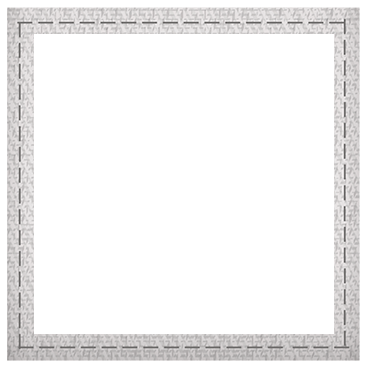
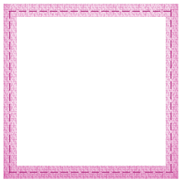
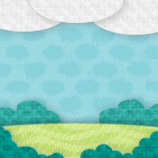
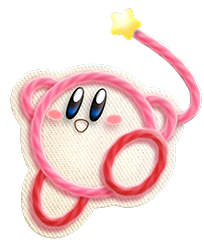

KIRBY
El clásico héroe rosa, ahora completamente transformado en estambre. Al perder su habilidad característica de tragar enemigos, utiliza un látigo de hilo para descoser a sus rivales y tiene la sorprendente capacidad de contorsionarse para convertirse en vehículos como tanques, ovnis, trenes y submarinos.